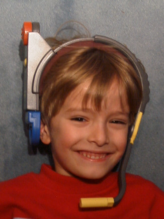
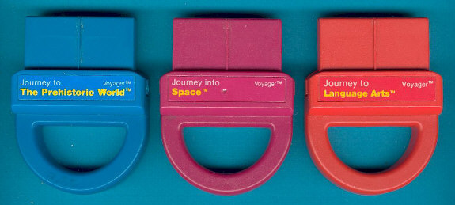
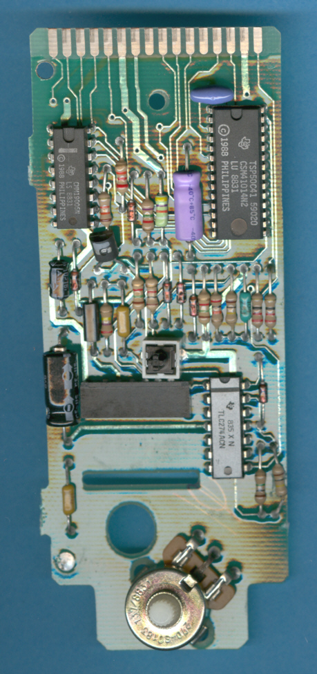
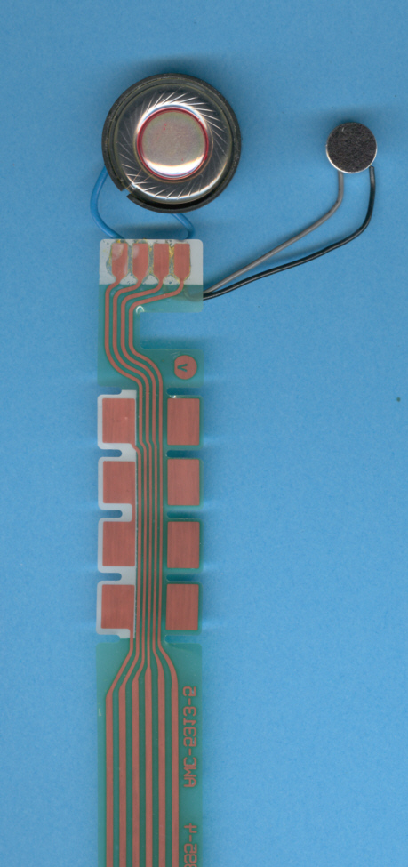

TI Voyager
A talking toy with no keyboard — the only way in is to answer aloud

Overview
The Texas Instruments Voyager (1988) is an educational toy that abandons the keyboard entirely. Where the Speak & Spell family used a position-sensitive membrane keyboard, the Voyager's entire user interface is a soft headset built from a flexible printed circuit (Flex-PCB), combining a microphone and a speaker. The toy speaks a question or mini-lesson using a TSP50C41 voice synthesis processor; the child answers by speaking one of four simple words — "yes", "no", "true", or "false" — and a speech-recognition stage decides whether the game continues.
Inside, the Voyager runs on a TSP50C41 single-chip Voice Synthesis Processor (an 8-bit microcontroller with 8KB mask ROM and 128 bytes plus 16 nibbles of RAM), an external TSP60C19 Voice Synthesis Memory (256K bits) carrying the recorded voices, and a TLC274 quad operational amplifier. Four AAA batteries powered it; the surviving unit documented by the Datamath Calculator Museum was manufactured in week 39 of 1988 in the United States.
Eight exchangeable speech-ROM cartridges (TSP60C21 modules) swapped the voice and the content through an expansion port — "Journey to Exotic Animals", "Journey to Birds & Reptiles", "Journey to Human Anatomy", "Journey to Language Arts", "Journey to The Prehistoric World", "Journey into Space", "Journey across The United States", and "Journey to U.S. Presidents" — each shipped with printed booklets. The Voyager is almost entirely forgotten compared to its keyboarded sibling, Speak & Spell, and that obscurity is part of its interest: it is proof that Texas Instruments pushed recognition, not just synthesis, into the toy aisle in the late 1980s.
Deep dive
The headset is a flexible printed circuit connecting speaker and microphone to the main board. There is no keypad, no touch panel, no switches beyond power — the child interacts purely by listening and answering aloud. The recognition vocabulary is tiny and speaker-independent, but the toy chains those four words through structured story-lessons and quizzes, making speech the entire input channel.
The eight speech-ROM modules turned a one-shot toy into a small platform with recorded voices and lesson content, plus printed booklets per module — a physical-media library model decades before app stores.
Recognition was fragile, the vocabulary was trivial, and a toy whose only input is your voice had to compete with louder, more visual toys in a market TI had largely retreated from after shuttering its consumer electronics division in 1983. The Voyager vanished without the cultural footprint of its siblings.
Team & pioneers
- Texas Instruments Consumer Products Group. Designer and manufacturer of the Voyager (1988) and the Speak & Spell family, and of the TSP50C41/TSP60C19 speech chips it was built around.
- Joerg Woerner / Datamath Calculator Museum. Preservation: documentation, disassembly photographs, module list, and scanned US manuals for all eight cartridges.
Media


